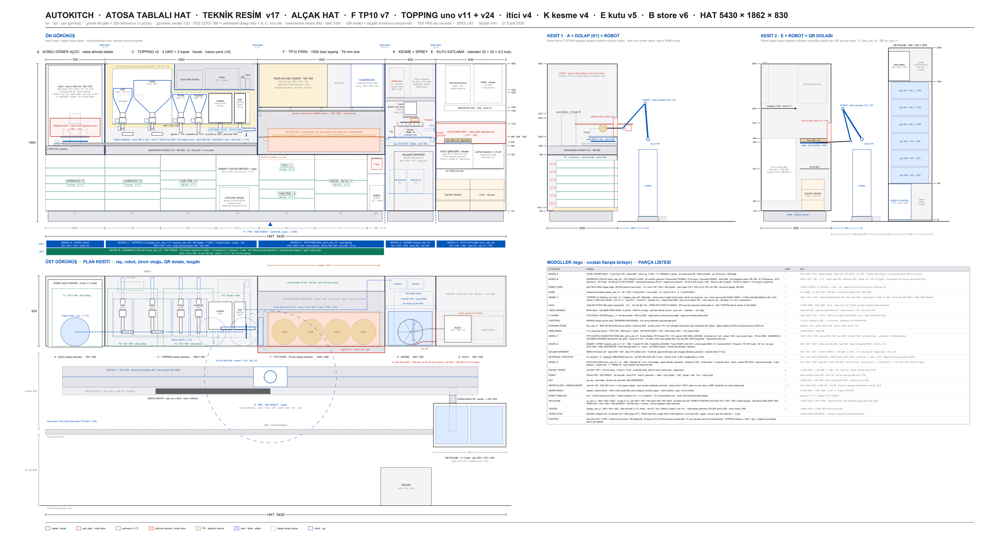
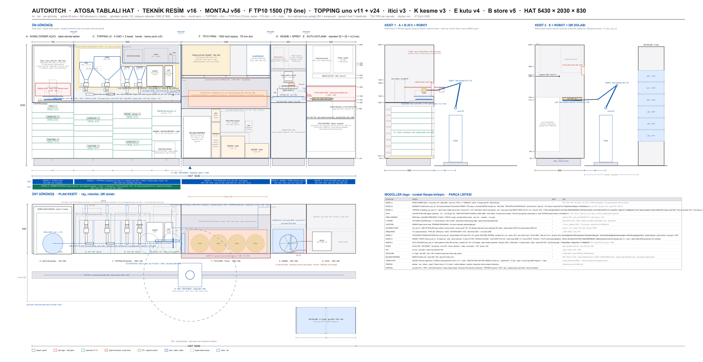
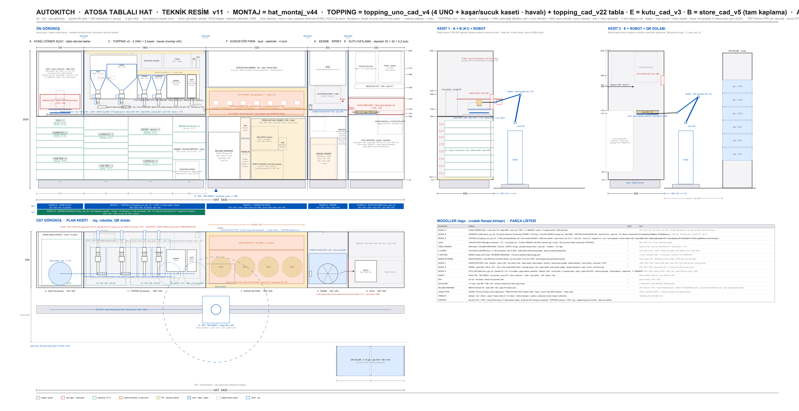
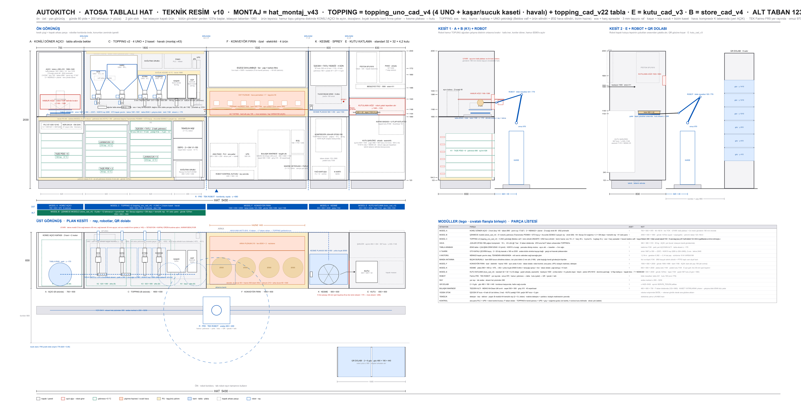
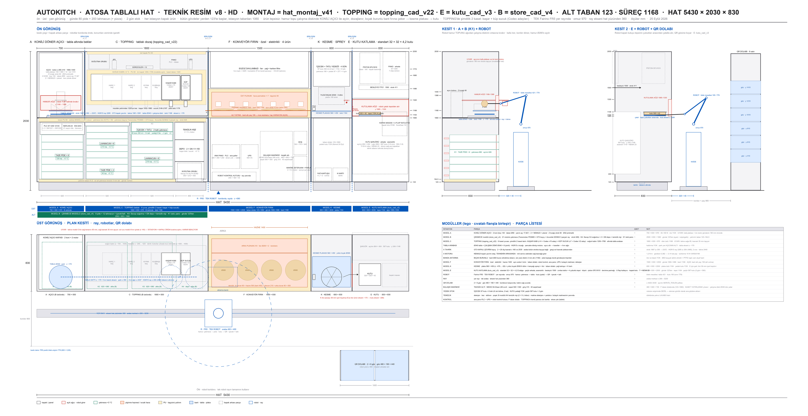
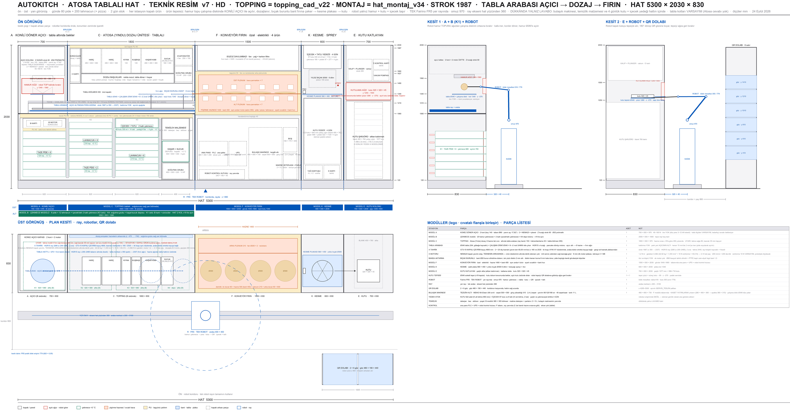

MAKİNE — 3B üretim modeli5430 × 909 × 1862
28 EYL · MONTAJ v63: ÖN DÜZLEM +79 · TEMİZ KUTU İSTASYONLAR. Bütün istasyonların ön yüzü fırının ön yüzüyle aynı düzlemde (z +79); arka yüz −830 yerinde, derinlik 909. Her istasyon kendi başına kapalı bir kutu: kapaklar ön düzlemde, aralarında 3 mm derz. Soğuk kapaklar 40 mm (304 1,5 + PU 37,5 + 304 1,0), kuru istasyon kapakları 20 mm tava panel (304 fırçalı 1,5). Modelin altındaki Ön kapaklar çubuğu: tam sağ = metal kapaklar, sola çektikçe saydamlaşır, tam sol = görünmez (içerisi). A gerçek kabin (robot ağzı + ışık perdesi) · fırın üstü kabin (alttan menteşeli düşer kapak, davlumbaz sac kutusu, kompresör tavası) · TOPPING, K ve E kapaklı · bulaşık ayaksız, tabla üstünde · dolabın altındaki atış kanalı K4'ün içine alındı.
Hattın tamamı tek modelde. Üstüne gel — adı çıkar. Çift tıkla — o istasyonun kendi modeli açılır. Modelin altındaki çubuktan kesit alabilir (X/Y/Z) ve iki noktaya tıklayıp ölçü çıkarabilirsin.
sürükle: döndür · tekerlek: yakınlaştır · üstüne gel: istasyon · çift tıkla: aç · alttan kesit + ölçü
0,0 / 84 sn
MONTAJ v57 (27 Eyl): ALÇAK HAT — BÜTÜN MEKANİZMA 168 AŞAĞI · TEK DÜZ ÇİZGİ 788 · MAKİNE ÜSTÜ 1862 (önceki 2030) · YENİ MODÜL S: QR DOLABI + TEZGÂH. Kemal: "bu teknik resme göre 3D modelle, sitede her şeyi güncelle, kontrol et". Çekmeceli dolap artık tek parça 0–4000; üstü 788 = A, C ve fırının altı, basamak yok. A ve C'nin mekanizması 104'lük kaidede (892) → disk 1000 → fırın bandı 998 → K bandı 996 → E tepsisi 936. F taban dolabı kalktı: fırın dolabın üstüne oturur, altında K5 · K6 çekmeceleri ve robot çöpü şeridi. Bulaşık makinesi K'nin altına indi, deterjan + parlatıcı arkasında. Robot kontrol kutusu, ana pano ve UPS koridorun karşısındaki QR dolabında. İçecek yedeği 6 koli E'nin altında. 1 · STORE → · 4 · FIRIN → · SERVİS / TESLİM →
1 · Ne yapar
Makine = beş istasyon + tek robot. Sıra: ÇEKMECE (hamur topu) → A AÇICI (konili açıcı, hamur tablada açılır) → C TOPPING (tabla 6 haznenin altından geçer) → F KONVEYÖR FIRIN → K KESME + SPREY → E KUTU → QR teslim dolabı. Ürün tepsisiz akar: tabladan fırın bandına, banttan kesme plakasına, oradan kutuya.
- Taban hizası: tek düz çizgi 788: çekmeceli dolabın üstü = A, C ve F fırınının altı (basamak yok, F istisnası kalktı). A ve C'nin mekanizması 104'lük kaidede, tabanı 892; K'nin tabanı da 892. Dolapta (A, C ve fırının altında): 24 çekmece (K1–K6) + sağ uçta robot çöpü şeridi. K'nin altında bulaşık makinesi (arkasında deterjan + parlatıcı), E'nin altında içecek yedeği. Fırının üstünde kompresör + pizza kutusu yedeği. E (kutu katlama) kesilmez, yerden tavana tek parça. Alt taraf da hizalı: bütün gövdeler yerden 123'te başlar, altları ayak + içeri çekik süpürgelik.
- Süreç kotu: çalışma diski 1000 → fırın bandı 998 → kesme plakası 996 → kutu ağzı ~981. Ürün her geçişte hafifçe aşağı iner, hiçbir kenara çarpmaz.
- Robot: tek Fairino FR5, hattın önündeki yer rayında (x 200–5100, eksen hat önünden 360). Hamur topunu, kutuyu ve içeceği taşır; kaseti eleman önden takar. Karşısında S modülü: QR teslim dolabı + personel tezgâhı.
2 · Özellikler
Modül standardıhepsi 909 derin (v63: ön düzlem +79, arka −830), makine üstü 1862 (önceki 2030). A AÇICI 700 · C TOPPING 1800 · F FIRIN 1500 · K KESME + SPREY 600 · E KUTU 830. B ÇEKMECELİ DOLAP 4000 × 788 tek parça, A, C ve fırının altında. S SERVİS / TESLİM koridorun karşısında (QR dolabı + tezgâh)
Toplam hat5430 × 909 × 1862 mm (montaj v64 · pafta v18)
Çekmeceli dolapB gerçek üretim modeli (store_cad_v6), +3 °C, 24 fitilli motorlu çekmece: K1 6 lahmacun · K2 6 lahmacun · K3 5 pide · K4 Secop + B panosu (PLC) + kaşar/sucuk deposu · K5 3 pide + tatlı · K6 3 içecek · şerit: robot çöpü 15 L + klape. Soğukta tam 2 gün: pide 160 · lahmacun 432 (gereken 400) · içecek 144 (139) · tatlı 12 (11). Fırının altında PU 60 ısı kalkanı · 1 · STORE · BOM
Kutu modülüE gerçek üretim modeli (kutu_cad_v5): standart 32 × 32 × 4,2 kutu, 462'lik şarjör (≈ 432'si kullanılabilir) + fırın üstünde 320 yedek, itici, zımba kalıbı, köprü, piston, devirme parmağı, U flap katlayıcı, kapak kolu, pano · 7 NEMA 23 · altında içecek yedeği 6 koli (144; dolapla 288 = 4 gün) · 5 · PACK
Servis / teslim (S)QR dolabı 860 × 520 × 2050: 12 göz (2 × 6, 450–1650), altta robot kontrol kutusu + kablo kangalı, üstte ana pano + UPS + kilit kartı + modem; servis kapakları robot tarafında. Personel tezgâhı 600 × 450 × 900: temizlik bidonları, bez / eldiven / poşet, 10 L çöp, kilitli kişisel çekmece; üstünde duvar askısı · QR DOLABI · TEZGÂH · BOM: QR · tezgâh · ray ekleri · kaide
Animasyon1 tam döngü (84 s): bir pizza (sos 80 g · kaşar 100 g · küp sucuk 70 g) K3 pide çekmecesinden QR gözüne gidiyor (sütun 1 · satır 3; gözün robot kapağı açılıp kapanıyor). Her hareket makinenin kendi kinematiğinden geliyor; fırın hızlandırıldı (gerçekte ~4 dk). Robot hâlâ ölçü kutusu, gerçek kol modeli yok. İstasyon sayfaları kendi döngülerini oynatıyor: 1 · STORE · TOPPING v2 canlı simülasyon · 4b · KESME · 5 · PACK
Taban hizasıÜst: tek düz çizgi 788 (dolap üstü = A, C, F altı); A/C mekanizması kaide 104 üstünde 892, K tabanı 892. Alt: bütün gövdeler yerden 123'te başlar (en alt çekmecenin 3 mm altı), altları ayak + süpürgelik (60 geride). E kutu katlama tek parça
Süreç kotuTOPPING modelinden ölçülür: disk 1000 · fırın bandı 998 (TP10 tel örgü 381 geniş; ürün hattı çekmeceden kesiciye z −170 düz, E'de −206) · kesme plakası 996 · kutu tepsisi 936
Robottek Fairino FR5, yer rayında (eksen z 360), omuz 970, erişim 779 · 12 QR gözünün hepsine erişir (en uzağı 690) · enerji zinciri + robot kablosu rayın yanındaki zemin oluğunda, QR'a kapaklı zemin kanalıyla · kablo: Fairino'nun 4 m standardı yetmez, 11 m uzatmayla 15 m, artanı QR altında kangal
Ölçü kaynağıKemal'in onayladığı resimler: ALÇAK HAT RESİM 1 v4 + QR / TEZGÂH v4 · HAT ATOSA TABLALI v17 teknik resmi (27 Eyl, montaj v57 ile aynı) + FIRIN_TP10 v6 + ITICI v3 · B store_cad_v6 · A/C kaide kaide_cad_v1 · F firin_tp10_cad_v7 · itici itici_cad_v4 · K kesme_cad_v4 + bulasik_cad_v1 · TOPPING topping_cad_v24 + topping_uno_cad_v11 (168 aşağı taşındı) · E kutu_cad_v5 · S qr_cad_v1 + tezgah_cad_v1 · ray ekleri ray_ek_cad_v1 · dükkân planı v14 (iç 570 × 271)
Kontrolüreteç çalışırken: süreç kotu CAD'den ölçülür · v57: üreteçler arası 27 kot eşitliği · taban hizası denetlenir · hiçbir birim hat zarfını aşamaz · fırın ↔ dolap, kaide ↔ TOPPING, QR + tezgâh + ray ekleri ↔ robot GERÇEK KATI kesişimiyle taranır · kutunun QR gözüne giriş yolu taranır · bulaşık K'nin içinde, açık kapağı robottan serbest · ürün yolu Ø280/Ø300 zarfla taranır, TOPPING sabit parçalarının 2500'ü geçmediği denetlenir: —
İtici: — Açık (karar bekliyor)dik U enerji zinciri açık K1 alt çekmecelerine çarpıyor · QR göz tabanında çatal dişi yuvası yok · deterjan kanisteri bulaşık çekilmeden değişmiyor · içecek yedeğinin kapağı yok · tezgâh önünde 390 mm kalıyor · soğutma yükü (Secop + 6 evaporatör) hesaplanmadı · kutu stoğu kullanılabilir ≈ 432 + 320 = 752 (onaylı 782)
İtici: — Açık (karar bekliyor)dik U enerji zinciri açık K1 alt çekmecelerine çarpıyor · QR göz tabanında çatal dişi yuvası yok · deterjan kanisteri bulaşık çekilmeden değişmiyor · içecek yedeğinin kapağı yok · tezgâh önünde 390 mm kalıyor · soğutma yükü (Secop + 6 evaporatör) hesaplanmadı · kutu stoğu kullanılabilir ≈ 432 + 320 = 752 (onaylı 782)
3 · Teknik resim


v17 · 27 Eyl (önceki)
v16 · 27 Eyl
v11 · 25 Eyl
v10 · 25 Eyl
v8 · 25 Eyl
v7 · 24 Eyl4 · Sürüm geçmişi
- PAFTA v8 (25 Eyl): teknik resim modele eşitlendi — hat 5430 (E 830 kutu katlama), alt taban çizgisi 123, süreç 1168, TOPPING iç kotları ve 2 kaset, B çekmece modülü v4, K'de yedek kutu yok. v7 aşağıda duruyor
- MONTAJ v57 (27 Eyl) · GEÇERLİ: ALÇAK HAT (Kemal: "bu teknik resme göre 3D modelle"; kaynak ALÇAK HAT RESİM 1 v4 + QR / TEZGÂH v4). Bütün mekanizma 168 aşağı: tek düz çizgi 788 (önceki B 1060 · F dolabı 956), A/C mekanizma tabanı 892 (kaide 104), disk 1000 (1168), fırın bandı 998 (1166), K bandı 996 (1164), E tepsisi 936 (1104), makine üstü 1862 (2030). B = store_cad_v6 tek parça çekmeceli dolap 0–4000, 24 çekmece (önceki 25): pide 160 · lahmacun 432 · içecek 144 (önceki 160) · tatlı 12 (önceki 30); fırın altında PU 60, sağ uçta robot çöpü 15 L. F taban dolabı kalktı; bulaşık K altına (+ deterjan / parlatıcı arkasında), içecek yedeği 6 koli E altına (önceki 5 koli F dolabında), robot kontrol + ana pano + UPS QR dolabına, temizlik tezgâha. Pizza kutusu: şarjör 462 (önceki 567) + fırın üstü 320 = 782 (önceki 887). Yeni modül S: QR dolabı qr_cad_v1 (önceki yer tutucu kutu) + personel tezgâhı tezgah_cad_v1. Ray ekleri ray_ek_cad_v1: zincir oluğu, enerji zinciri (robot x 2650'de sabit), robot kablosu 4 + 11 m, zemin kanalı. Pafta v17.
- MONTAJ v56 (27 Eyl): Kemal: "yalıtım sadece hacmi sarsın" + "koliyi aşağı taşı". TOPPING topping_uno_cad_v11: yalıtım yalnız soğuk hacmi sarar (A tavanı 60 · soğuk ↔ teknik L PU 30 · arka bölme · sağ yan PU 1277–1720), teknik cep (soğutma grubu · pano · güç · UPS) x 820–1800 · y 1720–2028 yalıtımın DIŞINDA, saç kabuklu, havalandırmalı, arkası açık; soğuğa ısı kaçağı ≈ 14 W (ince saçla ≈ 65 W idi). Yan PU duvarlar 3B'de görünür. İçecek yedeği 5 koli F dolabının pizza gözünde (3 + 2 = 120 · 4 gün), fırın üstünde yalnız kutu yedeği + kompresör. Denetimler TEMİZ.
- MONTAJ v55 (27 Eyl): yalnız görsel — TOPPING yalıtımı yarı saydam krem görünüyor (v51'den beri gizliydi), teknik ayırma saçı mavi, pizza kutusu ve içecek yedeği yığınları karton renginde (Kemal: "3D'de göremedim"). Geometri ve denetimler v54 ile aynı.
- MONTAJ v54 (27 Eyl): Kemal'in 5 maddesi: (1) TOPPING yalıtımı TEK DİKDÖRTGEN (PU 60, B'nin 1680 tavan dilimi kalktı, soğuk hacim tek parça), teknik cep (soğutma grubu · pano · güç · UPS) soğuk hacimden yalnız 1,5 mm saçla ayrık — topping_uno_cad_v10; (2) K'de tereyağı tankı + pano köprünün arkasına, üste taşındı, taban dolabı BOŞ — kesme_cad_v3; (3) paftada bez/eldiven kutusu fırına girmiş çizilmişti, düzeltildi (model zaten 950'deydi); (4) içecek yedeği K tabanından FIRIN ÜSTÜ SAĞA: 4 koli = 96 kutu (kompresörün solundaki 276 mm'ye 4 × 123 sığıyor), 5. koli F dolabının boş pizza gözünde → toplam 120 = 4 gün; (5) E'de kalıp ve kapak plakası ayakları 790'daki alt rafta bitiyor, rafın altı boş (≈ 796 × 630 × 348) — kutu_cad_v4. Ayrıca hava ana hattı yeniden yollandı (v53'te pizza yığınına 14 mm giriyordu) ve hava hattı ↔ kutu birimleri denetimi eklendi. Bütün denetimler TEMİZ.
- MONTAJ v53 (27 Eyl): BULAŞIK MAKİNESİ GERÇEK MODEL (bulasik_cad_v1): MEIKO M-iClean US föy ölçüleriyle 16 parça — çift cidarlı gövde 460 × 600 × 700, alttan menteşeli kapak (açık 1050, önde 455), dokunmatik ekran, ışıklı kulp, hazne ağzı 315 (yerden 275), sepet 400 × 400, alt + üst yıkama kolu, mavi M-iClean filtre, 4 ayar ayağı, arkada elektrik / tahliye / su bağlantıları (soldan 40 / 186 / 313). Dolap birimleri ve fırınla gerçek katı denetimi temiz; açık kapak (önde 455, alt kenarı yerden 353) robot rayından serbest; robot gövdesi ve kolu x 2300–3240 arasındayken kapak açılmaz — servis modu kilidi gerekir.
- MONTAJ v52 (27 Eyl): PİZZA KUTUSU YEDEĞİ TEK YERDE — fırın üstü SOL, rafta 320 kutu (1516–2028); dolaptaki 505'lik göz boşaldı; şarjör 567 + 320 = 887 = 3,1 gün (Kemal: "sola koy işte"). Raf 3 → 4 mm, takoz 6 → 10 (99 kg; sehim 0,2 mm, 3 mm'lik eski rafta ≈6 mm olurdu). FIRIN KABUĞU GÖRÜNÜR: v51'de çıplak filtresi fırının kendi dış kabuğunu da gizliyordu, 79 mm çıkıntı görünmüyordu — düzeltildi. ŞEFFAF İSTASYON YÜZEYLERİ: her istasyonda sol, sağ, arka, üst, alt (ön yok), aynı kuralla — 1,5 mm, arka hep −830, üst 2030 (B 1060), alt 123; ürün geçiş ağızları gerçek saclardan (TOPPING → fırın, fırın → K, K → E); A ile C arasında iç duvar yok, çünkü TOPPING'in açıcısı ve tabla arabası bu sınırdan 600 mm sola geçiyor.
- MONTAJ v51 (27 Eyl): FIRIN 79 mm ÖNE (Kemal: "fırını taşı, hizalanma olsun") — firin_tp10_cad_v5: gövde + konveyör + giriş bandı + ölü plaka +79 z, tünel iç yüzü ön yüz çizgisinde, duvar çıkıntı 1500 × 517 × 79 (F 909 derin); ürün hattı mağazadan kesiciye −170 düz, E −206. itici_cad_v3 düz 170 (destek plakası yok), topping_uno_cad_v9 (fitil tam), K giriş çiti yok, kesme_cad_v2 (ön kapaklar yok — Kemal), ÇIPLAK MODEL (yalıtım, yan/ön/arka saclar, PU duvarlar, fitil, süpürgelik ve kabin zarfları görselde yok; denetimler tam parçayla). Ayrıntı: oven.html 1c.
- MONTAJ v50 (26 Eyl gece): v49 + itici_cad_v2 (makara ve kaldırma pimi silindir ekseninin −w tarafına: v49 denetimi link uzantısının sucuk iniş borusunun altına 1–2 mm girdiğini, makaranın sensöre değdiğini, gövde/kirişin ön fitili kestiğini buldu) + topping_uno_cad_v8 (fitil alt şeridinde 130 mm boşluk; ön kapak yok) + yavaş çubuk kalkışı (animasyon sapması 27 → ≤ 3 mm hedefi).
- MONTAJ v49 (26 Eyl gece): AKTARMA İTİCİSİ (itici_cad_v1, modül C): SMC MY1B16-250 kolsuz silindir soğuk oda tabanına ters asılı, çapraz 24,9°, pivotlu 170 × 30 çubuk; araba eve dönerken makara sabit pime dayanır, çubuk 90° kalkar (pide koridoru 1210'un altında boş); pideyi (2337, −170) → (2507, −249) iter, destek plakası (y 1167) arkada kalanı taşır; ürün yolu çapraz itmeyle yeniden tarandı. Fırın v4: raf 40 mm takozlu + 0,8 mm ışınım kalkanı, kompresör 1516–2026. TOPPING v2 v7: yay Century 66644SCS (4 kovan + mandal), pim ISO 8734, segman DIN 471 kanalı d2 21 × 1,3, haç 7,0 girer (strok 8,0), mandal 4,5 örter; kabin yan duvarları 1277'den. Denetim: fırın çakışma + ürün yolu + itici (ev/son/orta, koridor, disk, itme süpürmesi) TEMİZ.
- MONTAJ v48 (26 Eyl gece): GERÇEK FIRIN. F = Sveba Dahlen TP10 kesitli, gövdesi 1500'e uzatılmış kızılötesi konveyör fırın (firin_tp10_cad_v3: ön oda 64 + uç duvarları 60, ısıtılan 1316 = 4 ürün, bant 2568–3996 gövde içinde, tahrik + gergi teknik bölmede; giriş bandı ön odada, çıkış ölü plakası, K bandında 20° giriş çiti; taban dolabı 956, pizza yedeği 505 + fırın üstünde 55). Kompresör K tabanından fırın üstündeki havalı rafa (kural 4 istisnası), ana hat fırın üstünden TOPPING sağ dış sacındaki rakora, K'ye dal. TOPPING v24: X motoru sol uca, avara sağa, kayış kelepçeleri arabanın sol yarısına → tekne 2500'de biter (v47'de 85 mm fırına giriyordu, zon muafiyeti gizliyordu). TOPPING v2 v6: kaset plakaları için kılavuz köşebentler, arka dayama, yaylı ön mandal (klik), her milde yaylı HAÇ yuvası (kasetin haç kavraması oturur), raf U-yarıkları, iniş borusu huni; yalıtım tek blok + ön fitil. Sim: tam yükte 46,3 / 51,7 = önceki. Denetim: gerçek katı kesişimi + ürün yolu TEMİZ.
- MONTAJ v47 (26 Eyl): ÖN YÜZDEN TAŞAN PARÇALAR İÇERİDE. Fırının önündeki köşede görünen parça TOPPING aktarma bandının motoruydu: makinenin ön yüzünün 78 mm önünde, havada ve 90° ters dönük duruyordu. Artık bandın arkasında, tahrik makarasıyla aynı eksende. Bandın ön yan sacı, makara mil uçları ve fire sileceği de ön yüzün (z 0) içine alındı. TOPPING çıkış yarığı 24 mm'den 44 mm'ye açıldı (küp sucuklu en yüksek ürün 28,5 mm, üst çubuk küplerin içinden geçiyordu). Yer tutucu fırın bandı TOPPING tahrik makarasının içinden başlıyordu, düzeldi. Hamur topu tablada 5,7 mm havada duruyordu, oturdu. Montaj artık ön yüzü ve en yüksek ürünün geçişini her çalışmada denetliyor. Açık: açıcı kafası ön yüzden 180 mm taşıyor (kavram kararı).
- MONTAJ v46 (26 Eyl): ANİMASYON DÜZELTMESİ. Dönen parçalar (tabla, açıcı konileri, UNO valfi, kaşar ve sucuk kaseti milleri, aktarma bandı makaraları) artık kendi ekseninde duran ayrı parça. Önce hattın başlangıç noktasına göre döndürülüp ötelemeyle geri getiriliyordu; kareler arasında öteleme düz, dönüş yay boyunca ara değerlendiği için eksenlerinden savruluyorlardı (ölçüldü: bant burun makarası 350 mm, koniler 96 mm, valf 94 mm → şimdi en çok 2 mm). Aktarma ucundaki sabit sensör, adı "tabla" ile başladığı için tablayla birlikte 2 m yarıçapla dönüyordu, sabitlendi. Animasyon 30 kare/s. Geometri v45 ile aynı (pafta v12 geçerli).
- MONTAJ v45 (26 Eyl): K KESME + SPREY gerçek üretim modeli oldu (kesme_cad_v1, 146 parça): fırın bandından ürünü alan PU bant (RollerDrive), aynı kafada Festo DGRF-C kesici + yıldız bıçak Ø296 ve göbeğinde PulsaJet tereyağı nozülü, 20° çit, igus eksenli itici, taban arkasında 3 L ısıtmalı tereyağı tankı + pano, önde içecek yedeği. TOPPING v2 yayıcısında kama yarık, UNO pistonu/valfi ve kaset milleri ayrı parça. Ana montaja 1 tam animasyon: çekmece → robot → açıcı → sos (tam 1 tur) → kaşar → sucuk → fırın → kesme → kutu → QR dolabı (84 s). Ayrıntı: 4b · KESME · TOPPING v2.
- MONTAJ v44 (25 Eyl): ALT KISIM yeniden. Çekmece modülü (store_cad_v5) tam kaplayan kapaklarla kapalı ve temiz görünüyor: kolonlar arası 3 mm, her kolon 126'dan 1057'ye. Soğukta her şey 2 günlük: pide 160, lahmacun 432, içecek 160 (tek kat, yaylı itici, robot her kutuya erişir), tatlı 30; K4'te Secop'un arkasında pano, üstünde kaşar + sucuk deposu (4 günün 2. yarısı) ve 2 dar içecek çekmecesi. Fırın tabanı: önde bulaşık makinesi (MEIKO M-iClean US), temizlik, 553'lük pizza kutusu yedeği (şarjörle 4 gün); arkada makine deterjanı, robot kontrol kutusu, ana pano, UPS. Kesme tabanı: önde soğutmasız içecek yedeği (120 kutu, toplam 4 gün), arkada kompresör + yağ + K kartı; kesmenin üst bölmesi boşaldı.
- MONTAJ v43 (25 Eyl): TOPPING'in altındaki 134 mm'lik PU yalıtım tabanı kalktı; yerine 3 mm paslanmaz taşıyıcı raf (önü ve arkası 40 mm bükülü). Yük 154 kg → sehim 3,4 mm, emniyet 2,3. Kaşar ve sucuk boruları raftan sarkan iniş borusuyla pideye iniyor.
- MONTAJ v42 (25 Eyl): TOPPING v2 (UNO'lu) ana montajda: sos · harç · kıyma · kuşbaşı Beltop UNO çekirdeğiyle (sos ve harçta Beldos spreader başlığı), kaşar ve küp sucuk bizim kasetlerle; tabla mekanizması v1'den. Hava: kompresör K taban dolabında, Ø10 ana hat F tabanının arkasından TOPPING'e, valf adası kuru bölmede. Ayrıntı: TOPPING v2. Önceki TOPPING (v1) kendi sayfasında duruyor.
- MONTAJ v41 (25 Eyl): TOPPING'de yalnız kaşar ve küp sucuk kaseti; Codex'in Isaac deneyindeki parçaları (kaşar v15 helezon B·C·D + tüp, sucuk V2 helezon D + tüp) 3B olarak yerinde, aday. Harç 1–2, kıyma, kuşbaşı şimdilik çıkarıldı. Ray ve tabla aynı (Isaac deneyi eski v13'te)
- MONTAJ v40 (25 Eyl): alt taban çizgisi 123 — en alt çekmecenin altındaki boş bant kalktı; STORE, F ve K taban dolapları ve kutu modülü aynı çizgide başlıyor (store_cad_v4, kutu_cad_v3). Kutu modülünün asansör tahriki tabanın altına indi, şarjör 567 kutu korundu. Ana montaj animasyonsuz; animasyon istasyon sayfalarında
- MONTAJ v39 (25 Eyl): çekmece rayı üç parçalı teleskop (store_cad_v3). Açılan çekmece artık rayda taşınıyor, havada kalmıyor: dış parça sabit, ara parça yarı yol, iç parça çekmeceyle gelir
- MONTAJ v38 (25 Eyl): E kutu katlama modülü gerçek üretim modeli (kutu_cad_v2, 11 birim, 830 genişlik → hat 5430) ve çalışma animasyonu artık ana montajda; çekmeceler + kutu modülü ortak 40 sn döngü. SolidWorks STEP çıktısı kaldırıldı
- MONTAJ v37 (24 Eyl): B çekmece modülü v2 — fitil profili, yan kayış, standart ürünler, çalışma animasyonu (store sayfası)
- MONTAJ v36 (24 Eyl): B çekmece modülü gerçek üretim modeli (store_cad_v1), her çekmece ayrı birim
- MONTAJ v35 (24 Eyl): yerleşim ATOSA TABLALI v7 (5300); A, C, F, K tabanları 1060'ta hizalı, E tek parça; süreç kotu 1168 (TOPPING'e göre); K'deki yedek kutular kaldırıldı; tek FR5 + QR dolabı
- HAT v19 (18 Eyl): 2 kol, ray yok, hat 3900; çekmeceler tabanda tek modül, PRESS + TOPPING üstünde; fırın 3 hazne; TOPPING 6 kaset yuvası (şimdilik 2 kaset takılı: kaşar + küp sucuk)
- HAT v14–v18: 2 kol seçeneği, tabla/bant karşılaştırması, aktarma gözü (iptal)
- HAT v51 (6 Eyl): PACK v4 — eski 4200 mm'lik tepsili hat